Keynote TechNet Live Tony en Daniel
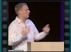
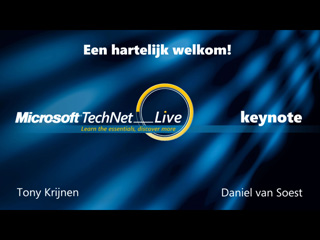
Speaker(s):
Microsoft Office Communications Server 2007 en Microsoft Exchange Server 2007 - Samen Beter (NL 16x9)
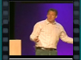
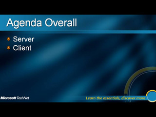
Speaker(s):
TechNet Live SharePoint overview - Bart Wessels
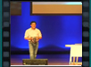
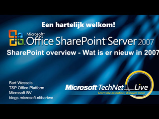
Speaker(s):
TechNet NL FFS sasar
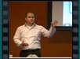
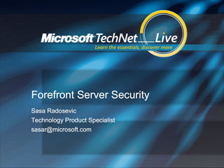
Speaker(s):
Forefront Client Security (Beekelaar)
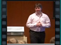
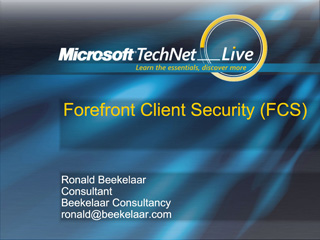
Speaker(s):
Nieuwe mogelijkheden met Microsoft Office Communications Server 2007 (NL 4x3)
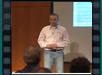
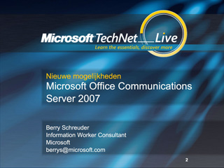
Speaker(s):
Office Communications Server 2007 en de integratie met telefoons (NL 4x3)
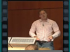
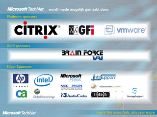
Speaker(s):
Hack the Network
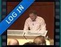
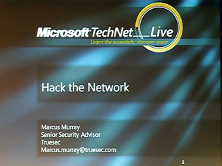
Speaker(s): Marcus Murray